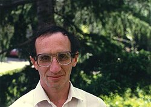
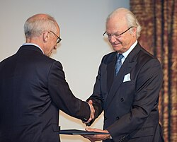

Yakov Eliashberg | |
|---|---|
Eliashberg in 2016. | |
| Born | 11 December 1946 |
| Alma mater | St. Petersburg State University |
| Known for | Homotopy principle Symplectic rigidity Eliashberg–Gromov theorem |
| Awards | Oswald Veblen Prize in Geometry (2001) Heinz Hopf Prize (2013) Crafoord Prize (2016) Wolf Prize in Mathematics (2020) BBVA Foundation Frontiers of Knowledge Award (2023) |
| Scientific career | |
| Fields | Mathematics |
| Institutions | Stanford University |
| Thesis | Surgery of Singularities of Smooth Mappings (1972) |
| Vladimir Rokhlin[1] | |
Doctoral students | |
| Website | mathematics |
{kind=link}
Yakov Matveevich Eliashberg (also Yasha Eliashberg; Russian: Яков Матвеевич Элиашберг; born 11 December 1946) is an American mathematician who was born in Leningrad, USSR. He is the Herald L. and Caroline L. Ritch Professor of Mathematics at Stanford University. His research interests are differential topology, symplectic topology, and contact topology. He was awarded many prizes for his work, including the Wolf Prize in 2020 (shared with Simon Donaldson).
Education and career
{kind=link}

{kind=link}

Eliashberg received his PhD, entitled Surgery of Singularities of Smooth Mappings, from Leningrad University in 1972, under the direction of Vladimir Rokhlin.[1]
Due to the growing anti-Semitism in the Soviet Union, from 1972 to 1979 he had to work at the Syktyvkar State University in the isolated Komi Republic. In 1980 Eliashberg returned to Leningrad and applied for a visa, but his request was denied and he became a refusenik until 1987. He was cut off from mathematical life and was prevented to work in academia, but due to a friend's intercession, he managed to secure a job in industry as the head of a computer software group.[2][3][4]
In 1988 Eliashberg managed to move to the United States, and since 1989 he has been Herald L. and Caroline L. Ritch professor of mathematics at Stanford University.[5] Between 2001 and 2002 he was Distinguished Visiting professor at the Institute for Advanced Study.[6]
As of 2026, he supervised 43 PhD students, including Eric Katz, Emmy Murphy and John Pardon.[1]
Research
Eliashberg's research interests are in differential topology, especially in symplectic and contact topology.[4]
In the 80's he developed a combinatorial technique[7] which he used to prove that the group of symplectomorphisms is -closed in the diffeomorphism group.[8] This fundamental result, proved also in a different way by Gromov,[9] is now called the Eliashberg–Gromov theorem, and is one of the first manifestations of symplectic rigidity.
In 1990 he discovered a complete topological characterization of Stein manifolds of complex dimension greater than 2.[10]
Eliashberg classified contact structures into "tight" and "overtwisted" ones.[11] Using this dichotomy, he gave the complete classification of contact structures on the 3-sphere.[12] Together with Thurston, he developed the theory of confoliations, which unifies foliations and contact structures.[13]
Eliashberg worked on various aspects of the h-principle, introduced by Mikhail Gromov, and he wrote in 2002 an introductory book on the subject.[14]
Together with A. Givental and H. H. W. Hofer, Eliashberg pioneered the foundations of symplectic field theory.[15]
Awards
Eliashberg received the "Young Mathematician" Prize from the Leningrad Mathematical Society in 1972.[16] He was an invited speaker at the International Congress of Mathematicians in 1986,[17] 1998[18] and 2006 (plenary lecture).[19] In 1995 he was a recipient of the Guggenheim Fellowship.[20]
In 2001 Eliashberg was awarded the Oswald Veblen Prize in Geometry from the AMS for his work in symplectic and contact topology,[21] in particular for his proof of the symplectic rigidity[7] and the development of 3-dimensional contact topology.[12]
In 2002 Eliashberg was elected to the National Academy of Sciences of the US[22] and in 2012 he became a fellow of the American Mathematical Society.[23] He also was a member of the Selection Committee in mathematical sciences of the Shaw Prize.[24] He received a Doctorat Honoris Causa from the ENS Lyon in 2009[25] and from the University of Uppsala in 2017.[26]
In 2013 Eliashberg shared with Helmut Hofer the Heinz Hopf Prize from the ETH, Zurich, for their pioneering research in symplectic topology.[27] In 2016 Yakov Eliashberg was awarded the Crafoord Prize in Mathematics from the Swedish Academy of Sciences for the development of contact and symplectic topology and groundbreaking discoveries of rigidity and flexibility phenomena.[28]
In 2020 he received the Wolf Prize in Mathematics (jointly with Simon K. Donaldson).[2][29][30] He was elected to the American Academy of Arts and Sciences in 2021.[31] For 2023 he was awarded the BBVA Foundation Frontiers of Knowledge Award in Basic Sciences (jointly with Claire Voisin).[32]
Major publications
- Eliashberg, Y. (1989). "Classification of overtwisted contact structures on 3-manifolds". Inventiones Mathematicae. 98 (3). Springer Science and Business Media LLC: 623–637. arXiv:1404.6157. Bibcode:1989InMat..98..623E. doi:10.1007/bf01393840. ISSN 0020-9910. S2CID 121666486.
- Eliashberg, Yakov (24 January 1991). "Filling by holomorphic discs and its applications". Geometry of Low-Dimensional Manifolds. Cambridge University Press. pp. 45–68. doi:10.1017/cbo9780511629341.006. ISBN 978-0-521-40001-5.
- Eliashberg, Yakov (1990). "Topological Characterization of Stein Manifolds of Dimension >2". International Journal of Mathematics. 01 (1). World Scientific Pub Co Pte Lt: 29–46. doi:10.1142/s0129167x90000034. ISSN 0129-167X.
- Eliashberg, Yakov; Ogawa, Noboru; Yoshiyasu, Toru (1 June 2021). "Stabilized convex symplectic manifolds are Weinstein". Kyoto Journal of Mathematics. 61 (2). Duke University Press. arXiv:2003.12251. doi:10.1215/21562261-2021-0004. ISSN 2156-2261. S2CID 214693087.
- Eliashberg, Yakov (1992). "Contact 3-manifolds twenty years since J. Martinet's work". Annales de l'Institut Fourier. 42 (1–2). Cellule MathDoc/CEDRAM: 165–192. doi:10.5802/aif.1288. ISSN 0373-0956.
- Eliashberg, Y.; Glvental, A.; Hofer, H. (2000). "Introduction to Symplectic Field Theory". Visions in Mathematics. Basel: Birkhäuser Basel. pp. 560–673. doi:10.1007/978-3-0346-0425-3_4. ISBN 978-3-0346-0424-6. S2CID 6725644.
- Bourgeois, Frederic; Eliashberg, Yakov; Hofer, Helmut; Wysocki, Kris; Zehnder, Eduard (4 December 2003). "Compactness results in Symplectic Field Theory". Geometry & Topology. 7 (2). Mathematical Sciences Publishers: 799–888. arXiv:math/0308183. doi:10.2140/gt.2003.7.799. ISSN 1364-0380. S2CID 11794561.
Books
- Eliashberg, Yakov M.; Thurston, William P. Confoliations. University Lecture Series, 13. American Mathematical Society, Providence, RI, 1998. x+66 pp. ISBN 0-8218-0776-5
- Eliashberg, Y.; Mishachev, N. Introduction to the h-principle. Graduate Studies in Mathematics, 48. American Mathematical Society, Providence, RI, 2002. xviii+206 pp. ISBN 0-8218-3227-1
- Cieliebak, Kai; Eliashberg, Yakov. From Stein to Weinstein and back. Symplectic geometry of affine complex manifolds. American Mathematical Society Colloquium Publications, 59. American Mathematical Society, Providence, RI, 2012. xii+364 pp. ISBN 978-0-8218-8533-8
References
- ^ a b c Yakov Eliashberg at the Mathematics Genealogy Project
- ^ a b "Yakov Eliashberg". Wolf Foundation. 2020-01-13. Archived from the original on 2020-01-13. Retrieved 2022-08-08.
- ^ Schulman, Julia; Hsieh, Michael (2021-02-11). "Coffin Problems: Soviet Anti-Semitism Buried Rising Jewish Scientists". Tablet Magazine. Retrieved 2022-08-08.
- ^ a b New perspectives and challenges in symplectic field theory (PDF). Miguel Abreu, François Lalonde, Leonid Polterovich. Providence, R.I.: American Mathematical Society. 2009. ISBN 978-0-8218-4356-7. OCLC 370387862.
{{cite book}}: CS1 maint: others (link) - ^ "Yakov Eliashberg". mathematics.stanford.edu. Retrieved 2022-08-09.
- ^ "Yakov Eliashberg". www.ias.edu. 2019-12-09. Retrieved 2022-08-08.
- ^ a b Eliashberg, Ya M. (1986). "Combinatorial methods in symplectic geometry". Proc. of the International Congress of Mathematicians, 1986. pp. 531–539.
- ^ Eliashberg, Ya. M. (1987-07-01). "A theorem on the structure of wave fronts and its applications in symplectic topology". Functional Analysis and Its Applications. 21 (3): 227–232. doi:10.1007/BF02577138. ISSN 1573-8485. S2CID 121961311.
- ^ Gromov, Mikhael (1986). Partial Differential Relations. doi:10.1007/978-3-662-02267-2. ISBN 978-3-642-05720-5.
- ^ Eliashberg, Yakov (1990-03-01). "Topological characterization of stein manifolds of dimension >2". International Journal of Mathematics. 01 (1): 29–46. doi:10.1142/S0129167X90000034. ISSN 0129-167X.
- ^ Eliashberg, Y. (1989-10-01). "Classification of overtwisted contact structures on 3-manifolds". Inventiones Mathematicae. 98 (3): 623–637. arXiv:1404.6157. Bibcode:1989InMat..98..623E. doi:10.1007/BF01393840. ISSN 1432-1297. S2CID 121666486.
- ^ a b Eliashberg, Yakov (1992). "Contact 3-manifolds twenty years since J. Martinet's work". Annales de l'Institut Fourier. 42 (1–2): 165–192. doi:10.5802/aif.1288. ISSN 0373-0956.
- ^ Eliashberg, Y.; Thurston, William P. (1998). Confoliations. Providence, R.I.: American Mathematical Society. ISBN 0-8218-0776-5. OCLC 37748408.
- ^ Eliashberg, Y.; Mishachev, N. (2002). Introduction to the h-principle. Providence, Rhode Island. ISBN 0-8218-3227-1. OCLC 49312496.
{{cite book}}: CS1 maint: location missing publisher (link) - ^ Eliashberg, Y.; Glvental, A.; Hofer, H. (2010), "Introduction to Symplectic Field Theory", in Alon, N.; Bourgain, J.; Connes, A.; Gromov, M. (eds.), Visions in Mathematics: GAFA 2000 Special volume, Part II, Basel: Birkhäuser, pp. 560–673, arXiv:math/0010059, doi:10.1007/978-3-0346-0425-3_4, ISBN 978-3-0346-0425-3, S2CID 6725644, retrieved 2022-08-09
- ^ "SPb. Math. Society: the awards". Saint Petersburg Mathematical Society. Retrieved 2022-08-09.
- ^ Gleason, Andrew M., ed. (1986). Proceedings of the International Congress of Mathematician 1986 (PDF). Vol. 1. Berkeley: American Mathematical Society. pp. 531–539.
- ^ Louis, Alfred K.; Schneider, Peter, eds. (1998). Proceedings of the International Congress of Mathematician 1998 (PDF). Vol. 2. Berlin: German Mathematical Society. pp. 327–338.
- ^ Sanz-Solé, Marta; Soria, Javier; Varona, Juan Luis; Verdera, Joan, eds. (2007). Proceedings of the International Congress of Mathematician 2006 (PDF). Vol. 1. Madrid: European Mathematical Society. pp. 217–246.
- ^ "Yakov Eliashberg". John Simon Guggenheim Memorial Foundation. Archived from the original on 2022-08-08. Retrieved 2022-08-08.
- ^ "2001 Veblen Prize" (PDF). Notices of the AMS. 48 (4): 408–410.
- ^ "Yakov Eliashberg". www.nasonline.org. Retrieved 2022-08-08.
- ^ List of Fellows of the American Mathematical Society Archived 2018-08-25 at the Wayback Machine, retrieved 2012-12-02.
- ^ "Award Presentation Ceremony 2012 | The Shaw Prize". www.shawprize.org. Retrieved 2022-08-08.
- ^ Mangin, Fabienne (2019). "La remise des insignes de Docteur 'Honoris Causa', une tradition au sein de l'ENS de Lyon" [The presentation of the insignia of doctor "Honoris Causa", a tradition within the ENS of Lyon]. alumni.ens-lyon.fr (in French). Retrieved 2022-08-08.
- ^ Piehl, Jakob. "Honorary Doctors of the Faculty of Science and Technology - Uppsala University, Sweden". www.uu.se. Retrieved 2022-08-08.
- ^ "Laureates 2013". math.ethz.ch. Retrieved 2022-08-08.
- ^ "The Crafoord Prizes in Mathematics and Astronomy 2016".
- ^ University, Stanford (2020-01-17). "Yakov Eliashberg awarded Wolf Prize in Mathematics". Stanford News. Retrieved 2022-08-08.
- ^ Kehoe, Elaine (2020-06-01). "Donaldson and Eliashberg Awarded 2020 Wolf Prize". Notices of the American Mathematical Society. 67 (6): 1. doi:10.1090/noti2109. ISSN 0002-9920. S2CID 225820459.
- ^ "Yakov Eliashberg". American Academy of Arts & Sciences. Retrieved 2022-08-08.
- ^ BBVA Foundation Frontiers of Knowledge Award 2023